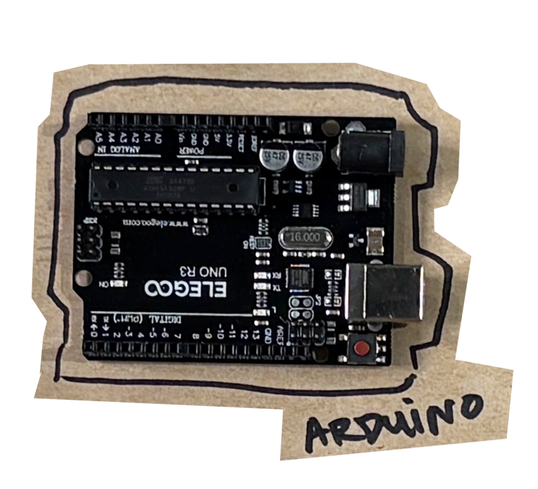
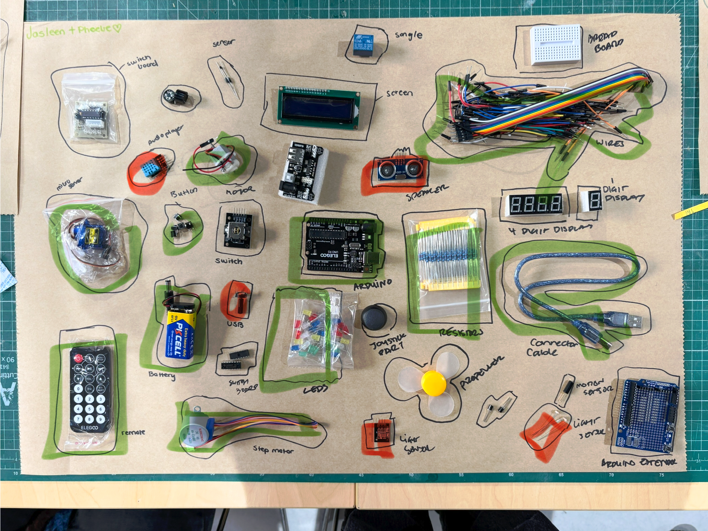
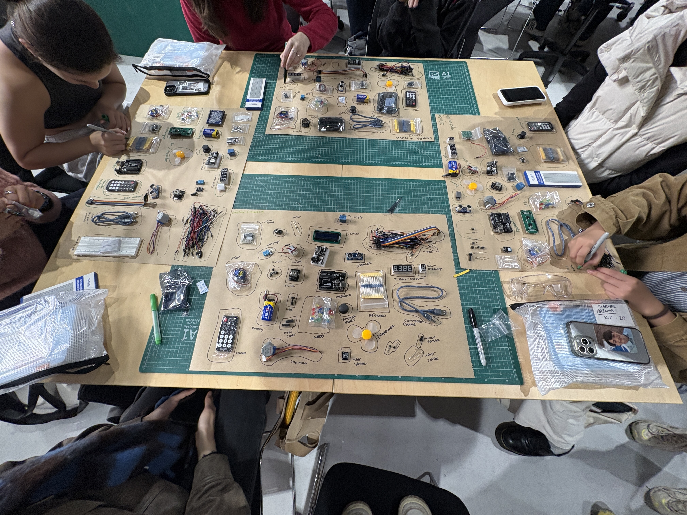

back
Starting with Arduino, I was really excited to be able to start diving into physical computing. I had past experience using Ardunios before, but to a limited extent, as my more recent activities were teaching year 7s-9s how to make basic LED circuits, so I went into this activity thinking that It wouldn't be too hard to figure out what is in the kit. In hindsight, some of our definitions were a bit vague (like 'Remote' and 'sensor') - so some learning of parts was needed.
On the other hand, Our group wasnt too good at identifying sensors (Circled in Red). I think its because these elements are often not as obvious in physical computing projects i've interacted with (and certainly were too precious to give to not-so-careful highschoolers.)

